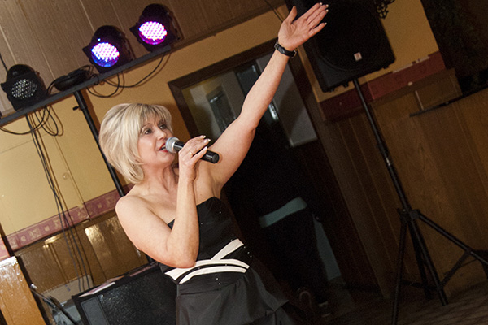
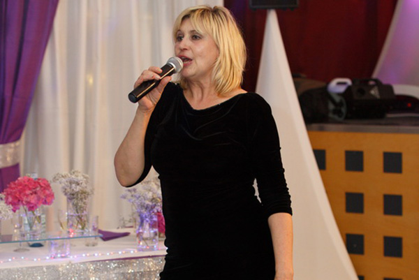
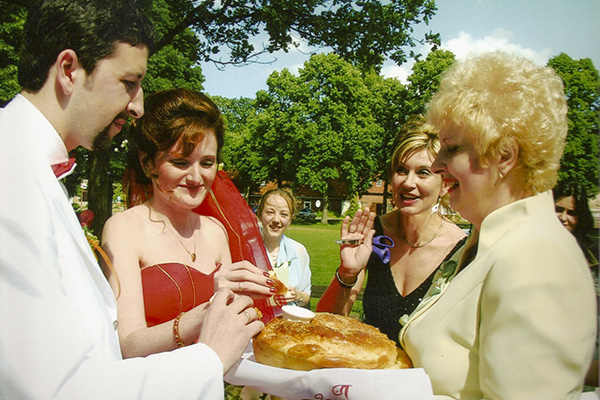
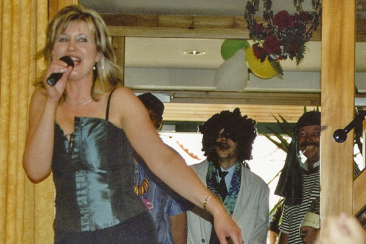
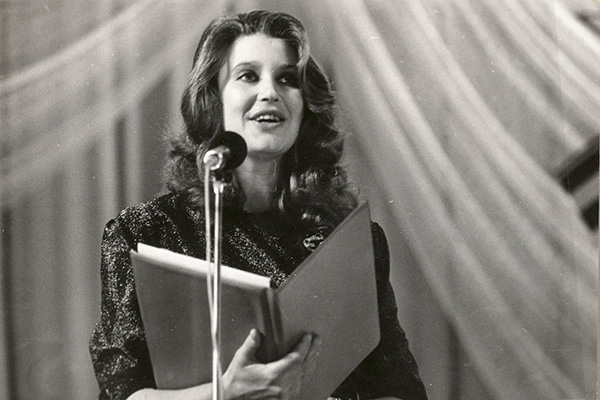
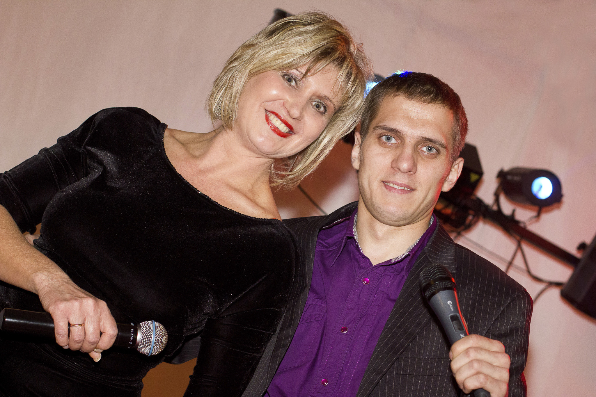
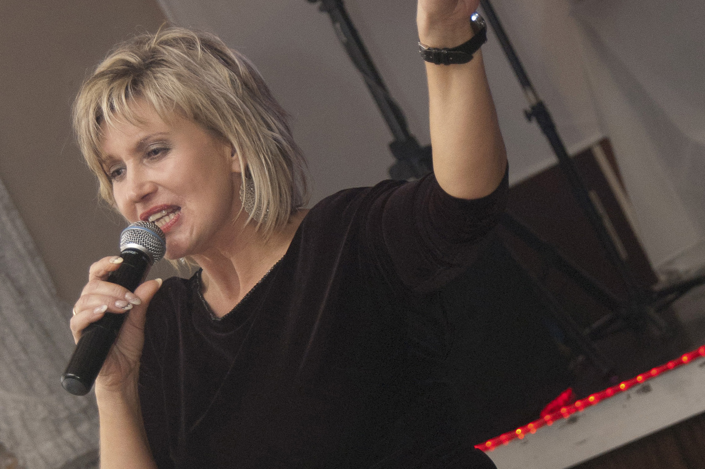
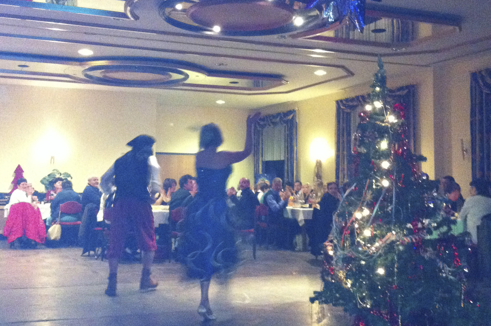
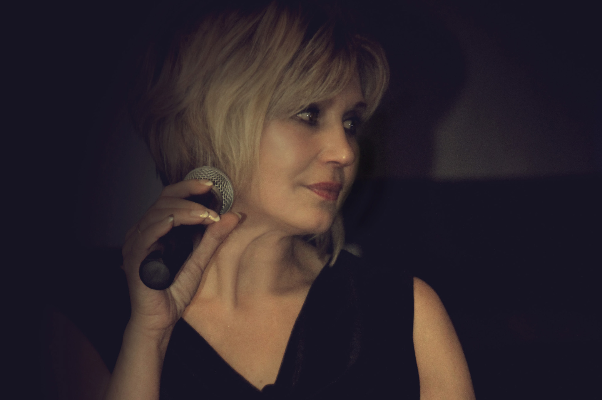
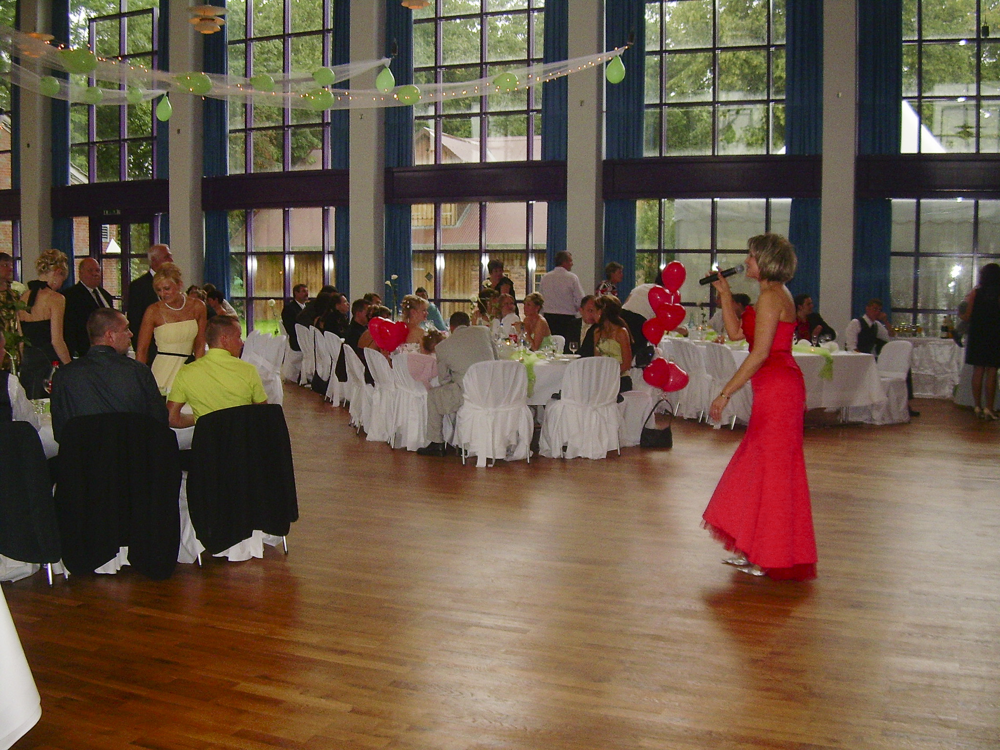

Olga Kling — professionelle Organisation und Durchführung von Hochzeiten und Jubiläen. Starke Bühnenerfahrung und fließende Moderation auf Russisch und Deutsch. Ein individueller Ansatz und eine flexible Planung machen Ihren festlichen Anlass zu einem unikalen Erlebnis. Langjährige Erfahrung mit Festivitäten verschiedenster Maßstäbe — von gemütlichen Familienfeiern mit 20 Leuten bis zu eindrucksvollen Hochzeiten mit bis zu 700 Gästen. Olga fühlt sich auf der Bühne, ob als Moderatorin oder Sängerin, wie zu Hause. Wohnhaft ist sie seit nun schon mehr als 20 Jahren in Cloppenburg, Niedersachsen, wo sie nebenbei den Braut- und Abendmodensalon „Lady Charme“ seit nun fast 10 Jahren erfolgreich leitet.
Olga Kling
Professionelle Moderation von Hochzeiten, Jubiläen und anderen Festen
Professioneller Lebensweg
Olgas Karriere in Zahlen und Fakten
2013 - ...


Im Jahr 2013 führte Olga eine Hochzeit durch mit einem persönlichen Rekord von 700 anwesenden Gästen. Eine russisch-türkische Familie hatte sich versammelt um den Anfang ihres gemeinsamen Lebens zu zelebrieren. Im Jahr 2015 erschien Olga als Moderatorin einer russisch-deutschen Hochzeit im Fernsehen. Das Brautpaar nahm an der VOX TV Show „4 Hochzeiten und eine Traumreise“ teil, gefilmt wurde noch Mitte 2014. Anwesende Gäste der Hochzeit waren beeindruckt von der stimmungsvollen Atmosphäre und kreativen Gestaltung der Hochzeit. Im Jahr 2016 singt Olga als Vertreterin der russischen Kultur in Cloppenburg auf dem „Tag von Cloppenburg“.
2006-2013
-

- 
- 
Im Jahr 2006 organisiert Olga ihren ersten Herbstball mit bis zu 200 Gästen, im Jahr 2008 stellt Sie einen persönlichen Rekord auf mit 280 Gästen. 2009 arbeitet Olga das erste Mal auf dem „Tag von Cloppenburg“, bei dem Sie den Cloppenburgern die russische Kultur und Musik näher bringt. Im Jahr 2007 entscheidet sich Olga dafür ihr Leben vertiefend dem Thema Hochzeit und Festlichkeit zu widmen, sie eröffnet Ihrer Braut- und Abendsalon „Lady Charme“ in Vechta, der im Jahr 2013 umzieht nach Cloppenburg.
2000-2005
-

- 
-

Im Jahr 2000 fängt Olga ihre Solo-Karriere an als Sängerin und Moderatorin auf Hochzeiten. Seitdem führt Sie Hochzeiten verschiedenster Arten durch; deutsche, russische, deutsch-russische, russisch-polnische, russische-türkische und taubstumme Hochzeiten. 2004 organisiert Olga ihr erstes Weihnachtsevent für Kinder, im Jahr 2005 folgen verschiedenste Evente auch für Erwachsene- den traditionellen Herbstball im Oktober oder Olgas Silvesterparty zum Ende des Jahres.
1993-1999
-

- 
Im Jahr 1993 zieht Olga mit ihrer Familie aus Omsk, Russland nach Cloppenburg, Deutschland. 1997 fängt Olga ihre Arbeit im Kulturzentrum Elite an, in dem zu der Zeit auch bekannte Musiker wie Sergey („Чёрный бумер“), Faktor 2 und Vadim Kusema arbeiten. Im Jahr 1998 arbeitet Olga auf einer Hochzeit zusammen mit Sergey.
1985-1993
- 
-

-

-

Im Jahr 1985 beginnt Olga ihre Kulturarbeit im DK Kulturzentrum Omsk (ДК Омского Моторостроительного Производственного Объединения им П.И. Баранова). Hier trifft sie unteranderem auf berühmte Persönlichkeiten wie Alla Pugascheva, Valentin Tolkunova, Alexander Rosenbaum und Pavel Aidaniykim. Während Ihrer Arbeit im Moderations- und Organisationbereich reist Sie in die Tschechoslowakei (Prag), DDR (Berlin), Moskau und Kiev. Sie arbeitet in den größten Einrichtungen in ganz Omsk.
1980-1984


Schon in ihrer Kindheit nimmt Olga teil an Kultur und ist Mitwirkende bei zahlreichen Theateraufführungen. Im Jahr 1980 spielt Sie im Omsker Theater TUS die Bergkönigin und die Liposhka in Tschehovs „Tschaika“. 1981 wird Olga eingeladen in das professionelle Theater und im Jahr 1984 fängt Olga ihr Studium in Kultur an.
Galerie
Fotos und Video
<<<<<<< HEAD:index.html
=======
>>>>>>> dev:dev/index.html
- 
-

-

- 
-

- 
-

-

- 
-

- 
Hochzeitsplan
Ideen für Ihren persönlichen Anlass
| Nummer | Handlung | Weiteres |
|---|---|---|
| 1 | Festliches Empfangen und Begrüßung des Brautpaares | |
| 2 | Einzug des Brautpaares durch einen Liebestunnel „Der Tunnel“ kann bestehen aus Rosen, Heissluftballons, usw | „Der Tunnel“ kann bestehen aus Rosen, Heissluftballons, usw |
| 3 | Beglückwünschung | |
| 4 | Eröffnung der Hochzeit mit einer Hochzeitsrakete | |
| 5 | Erster Toast an das Brautpaar | |
| 6 | Empfang der Hochzeitssuppe: Chefkoch Kostüm | Chefkoch Kostüm |
| 7 | Eröffnung des Hochzeitsbuffets | |
| 8 | Zweiter Toast an die Eltern | |
| 9 | Familienkerze | |
| 10 | Traditioneller Schuhklau:Hexen, Piraten | Hexen, Piraten |
| 11 | Romantischer Hochzeitstanz des Brautpaares. Solltet ihr euch hier nicht entscheiden können- hilft euch Olga gerne | Solltet ihr euch hier nicht entscheiden können- hilft euch Olga gerne |
| 12 | Geheime Überraschung für die Braut | |
| 13 | Traditioneller Brautklau: Polizei, Piraten, Zwerge | Polizei, Piraten, Zwerge |
| 14 | Hitparade mit:Michael Jackson, Elvis Presley, Marilyn Monroe, Lady Gaga, Katy Perry, PSY, Комбинация, ABBA и.т.п. | Michael Jackson, Elvis Presley, Marilyn Monroe, Lady Gaga, Katy Perry, PSY, Комбинация, ABBA и.т.п. |
| 15 | Hochzeitstorte begleitet von Wunderkerzen: Ägyptische Pharaonen, Antike Griechen | Ägyptische Pharaonen, Antike Griechen |
| 16 | Zeremonie zur Schleierabnahme um Mitternacht | |
| 17 | Strumpfband wird abgenommen | |
| 18 | Traditioneller Schleiertanz | |
| 19 | Brautstrauß wird geworfen | |
| Optionale Programmpunkte: | Optionale Programmpunkte: Hochzeitsschlange,Kreative und bunte Spiele |
Kontakt
Wie kann man mich kontaktieren
Telefon: +49 (0) 4471 87736
Mobil: +49 (0) 157 714382 65
Email: olga.kling.clp@gmail.com
Olga findet ihr auch im Geschäft „Lady Charme“.
Adresse: 49661 Cloppenburg, Löninger Straße 26